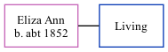

Eliza Ann, the wife of William Spratt (the great-great-uncle of Nigel Horne), was born in Hoath, Kent, England c. 18521,2,3.
Throughout her life, she lived in Canterbury, Kent, England in 18911, in 19012 and on Apr 2, 19113.
Citations
1891 England Census Online publication - Provo, UT, USA: The Generations Network, Inc., 2005.Original data - Census Returns of England and Wales, 1891. Kew, Surrey, England: The National Archives of the UK (TNA): Public Record Office (PRO), 1891. Data imaged from The National (Relation to Head of House: Wife)
1901 England Census Online publication - Provo, UT, USA: The Generations Network, Inc., 2005.Original data - Census Returns of England and Wales, 1901. Kew, Surrey, England: The National Archives of the UK (TNA): Public Record Office (PRO), 1901. Data imaged from the National (Relation to Head of House: Wife)
1911 England Census Online publication - Provo, UT, USA: Ancestry.com Operations, Inc., 2011.Original data - Census Returns of England and Wales, 1911. Kew, Surrey, England: The National Archives of the UK (TNA), 1911. Data imaged from the National Archives, London, England. (Marital Status: WidowedRelation to Head of House: Head)
Family Tree

Map
Generated by Ged2Site. Last updated on Jul 20, 2025